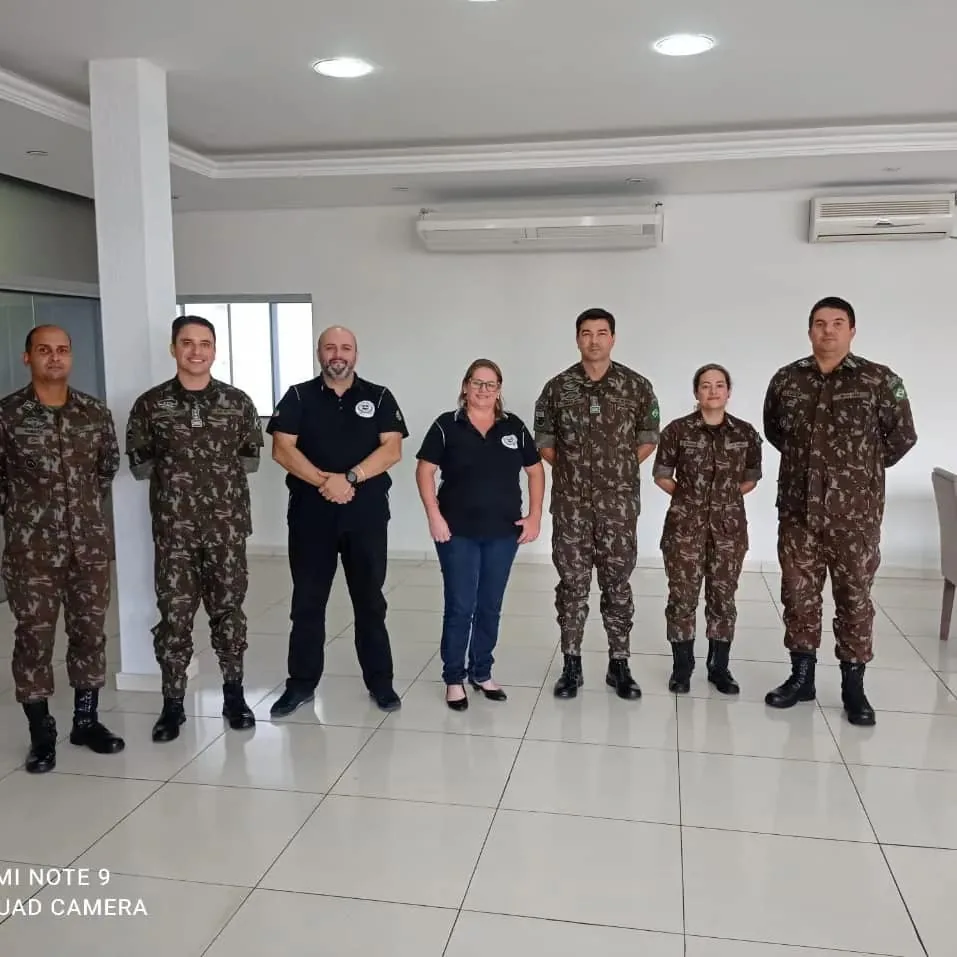
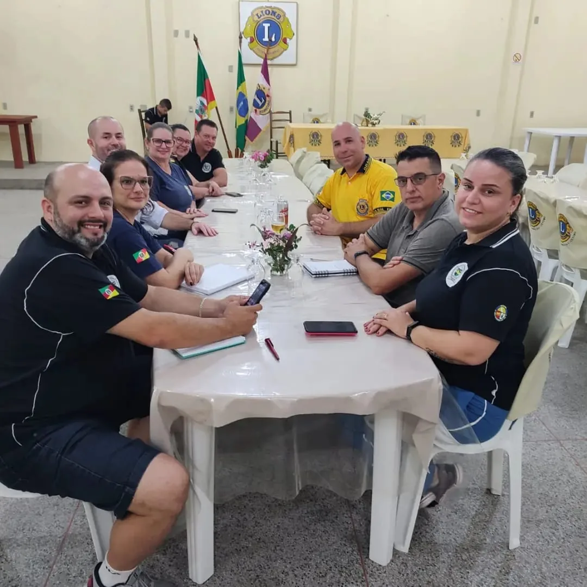

Editais e Parcerias
Recursos que viram cultura
Editais, prêmios e a rede de parceiros que fortalecem o Tropilha.
Total captado
R$ 366.918,21
Em editais, prêmios e doações, em recursos, equipamentos e bens, de 2018 a 2026. As prestações de contas dos projetos executados foram aprovadas.
Fomento
Editais, prêmios e doações (2018 a 2026)
| Ano | Edital / programa | Projeto | Valor |
|---|---|---|---|
| 2018 | Fundo Social Sicredi | 3º Tropilha em Versos (oficina de declamação) | R$ 3.200,00 |
| 2023 | Edital de Desfazimento de Bens nº 02/2023, Tribunal de Contas do RS (Lote 14) | 11 peças de mobiliário | Bens |
| 2024 | Edital de Doação nº 001/2023, Prefeitura de Sapucaia do Sul | 670 itens recebidos em fev/2024 | R$ 61.602,50 (avaliação) |
| 2024 | PNAB, Edital 12/2024, Prefeitura de Sapucaia do Sul | Oficinas de Gaita e Violão Gaúcho | R$ 19.497,15 |
| 2024 | PNAB, Edital 14/2024, Prefeitura de Sapucaia do Sul | Subsídio: Curso de Fandango | R$ 30.000,00 |
| 2024 | Segue o Jogo 2, Secretaria do Esporte e Lazer do RS + CUFA-RS | Bocha Campeira (equipamentos esportivos) | R$ 9.659,00 |
| 2025 | Edital 01/2025, Prefeitura de Sapucaia do Sul (Cultura Viva) | Premiação a Ponto de Cultura | R$ 41.400,00 |
| 2025 | SEDAC nº 21/2025, Avançar Tchê | Prêmio Tradicionalismo Gaúcho | R$ 40.000,00 |
| 2025 | SEDAC nº 22/2025 | Invernadas Culturais II: Da Trempe ao Bailado | R$ 47.859,56 |
| 2026 | CTG na Escola, SEDAC/RS + MTG/RS | Sementes da Tradição | R$ 18.000,00 |
| 2026 | Chamamento Público 02/2026, PNAB, Prefeitura de Sapucaia do Sul | Subsídio para manutenção de espaços artístico-culturais | R$ 60.000,00 |
| 2026 | Chamamento Público 03/2026, PNAB/Cultura Viva | Prêmio a Pontos e Pontões de Cultura | R$ 18.400,00 |
| 2026 | Segue o Jogo 4, Secretaria do Esporte e Lazer do RS + CUFA-RS | Mateada de Xadrez (equipamentos, itens em definição) | Até R$ 12.000,00 |
| 2026 | Fundo Social Sicredi 2026 | Raízes da Tradição: canchas de bocha e bolita | R$ 5.300,00 |
Parcerias
Rede que fortalece o Tropilha
- Rede social e assistencial
- União Solidária, Cruz Vermelha, ACAPASS, Lar Arco-Íris, Lar Abrigo Meu Refúgio, Clube de Mães Madre Paulina, ACMOBAF, Sociedade Espírita Irmã Dulce, Sociedade Recreativa Bangu, Igreja Sagrada Família
- Educação
- Escolas Municipais de Sapucaia do Sul e APAE
- Tradicionalismo
- MTG/RS, 12ª Região Tradicionalista e demais CTGs
- Poder público e instituições
- Secretaria Municipal de Cultura e Turismo, SEDAC/RS, 18º Batalhão de Infantaria Motorizada, Igreja Luterana/IECLB
- Setor cooperativo e privado
- Sicredi e Lions Clube Sapucaia Centro

